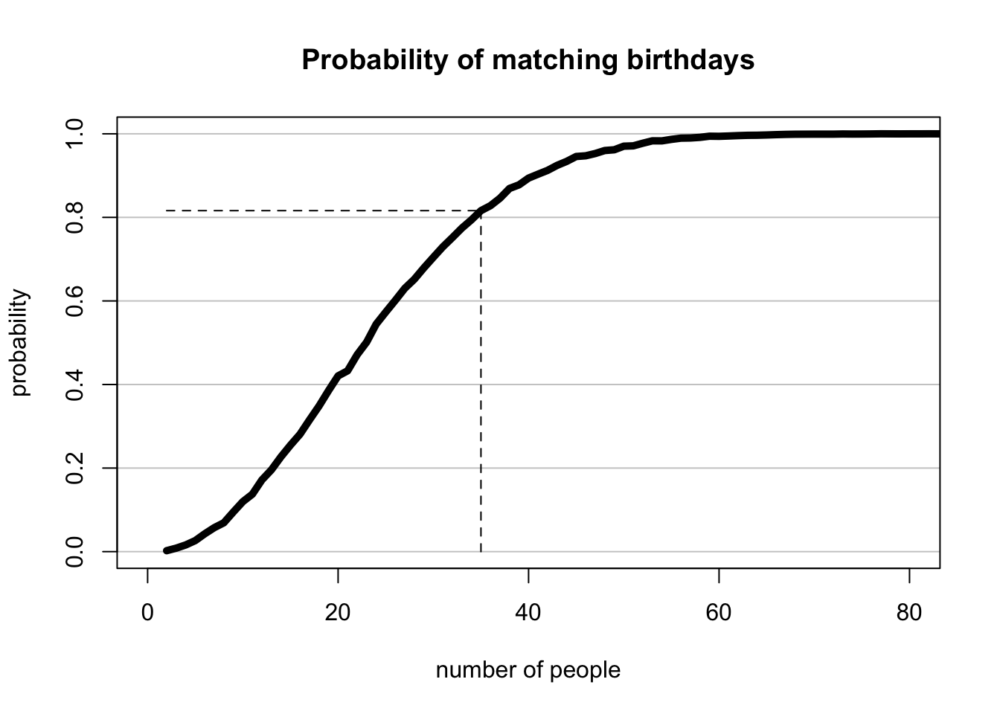
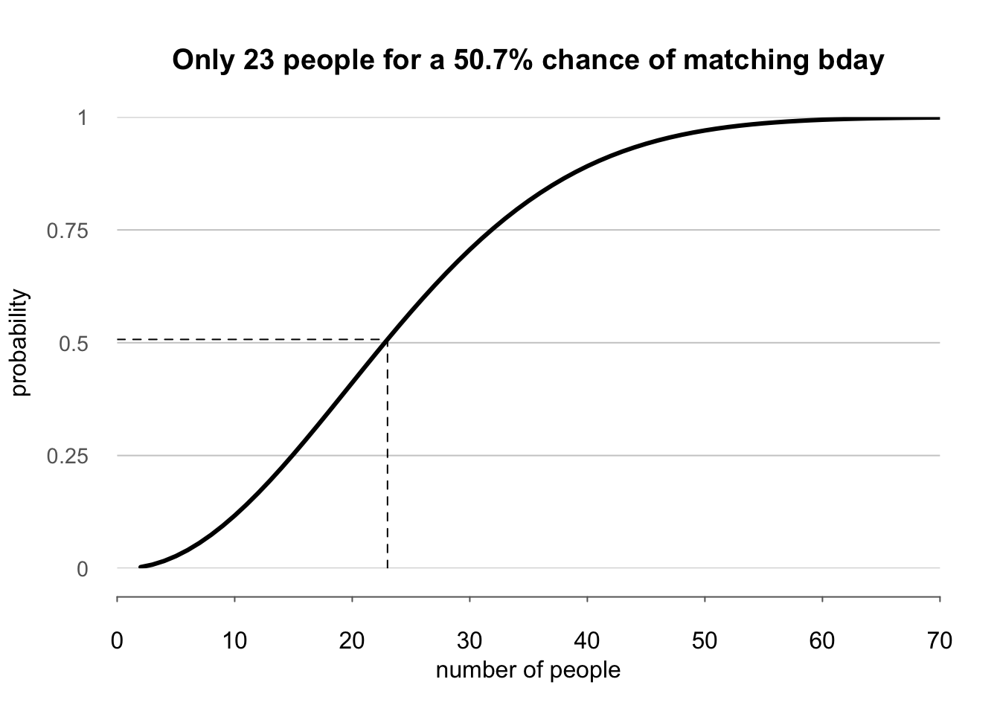
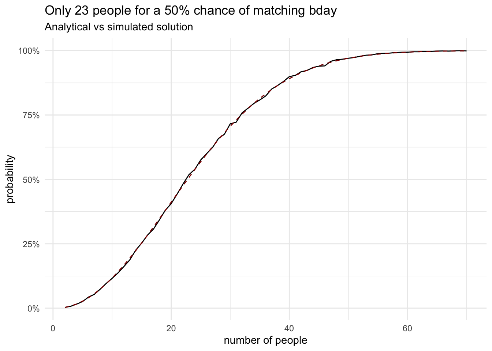

set.seed(15317) # has to be a larger odd number. why?
nr_people <- 35 # even integers and floats are vectors of size one!
simulate_birthdays <- function(nr_people, nr_sim = 10000) {
birthday_events <- replicate(n = nr_sim, {
birthdays <- sample(x = 1:365, size = nr_people, replace = TRUE)
anyDuplicated(birthdays) > 0 # returns for each sim
})
mean(birthday_events) # this returns implicitly!
}
pr_same_bday <- simulate_birthdays(nr_people)
bday_match_size <- sapply(2:90, simulate_birthdays, nr_sim = 10000)Introduction to simulation in R
Birthday problem
In the introduction, I tried to convince you that simulation can be used to understand fundamental concepts in probability and statistics in order to appreciate their practical relevance. By implementing the stories, toy examples, and case-studies in code, we will bridge the gap between theory and practice. Hopefully, this will help you gain confidence and get over the fear of mathematical abstraction in probability and hone your programming skills for data analysis. 1
1 If you were traumatized by C and C++ programming, worry not, R is an easy and pleasant language which will allow us to focus on the problem and less on low-level technicalities
“What I cannot build, I do not understand” - Richard Feynman
When having trouble understanding something, do not despair and remember this quote from the great physicist. Do not resort under any circumstance to rote memorization,2 as you will forget it in a few weeks, but instead think like an engineer. Once you build it by yourself, you will understand how a method works and can do it again in the future. At last, I want to tell you two important lessons from Patrick Winston’s talk at MIT, “How to speak”:
2 When you encounter a problem, stop and think first. Do not try to guess, remember or recall the answer, but work through the logic of solving it
- The quality of your idea and solution is a function of knowledge, practice, and talent; where talent is the least important – \(f(\mathbb{K}, \mathbf{P}, T)\)
- Your success will be largely determined by your ability to speak, write, and the quality of your ideas – \(g(S, W, Q)\)
It might sound obvious, but we practice in a very specific way – with your reference book(s), code editor, and pen / paper at all times. Learn actively, by doing and problem solving, by testing yourself, by trying to come up with your own examples. We cannot afford to rush and take shortcuts when studying mathematics and computer science.3
3 It is so easy to fool ourselfs that we understood something by just reproducing it or taking notes
Read, pause, think, pause, write, pause, (perhaps erase), pause, read, pause, (perhaps go back), pause, write, … - A. Turing, 1936
The Birthday Problem
This classic probability problem about matching and coincidences will remind you of a few important ideas in combinatorics and will teach you some of the most important elements of R programming.
What is the probability that in a room of \(n=35\) people, at least two have their birthday on the same day of year? We will assume that every day is equally likely, ignore leap year (\(k = 365\)), there are no twins (observations are independent with respect to birthday date).
Let’s check your intuitions
Find a colleague near you, discuss for two minutes how many people you need in a room so that the probability of any two people having a matching birthday is close to 0.5.
Then, the other way around, for \(n = 35\), what is the probability of a matching birthday? In what range is your answer? Raise your hand for the appropriate bucket. Abstain if you know the exact answer from before.4
\[[0, 0.2), [0.20, 0.4), [0.4, 0.6), [0.6, 0.8), [0.8, 1]\]
Then, answer how appropriate are the assumptions we’re making – is it good enough for an approximation?
At last, think of boundary conditions: what is the probability for 365 and 400 people? Can you figure out the answer for 2 people?
4 It’s important to realize that knowing the answer is not important, but the reasoning behind it
We solve this problem via simulation first and will check our answers versus the analytical solution. This is an important lesson – when you’re stuck on a problem, it’s a good idea to simulate it first and find the numerical answers, which will give us ideas about how to solve it mathematically. In reality, we need both, as a careful mathematical analysis will result in more insights about the properties of a problem or construct and will show us how to generalize to more complicated cases.
Surprising applications
Sometimes, a simple problem like this can have surprising applications and provide valuable insights / tools in different, totally unrelated domains.
The birthday “paradox” is the simplest way to compute probability of coincidences. This is useful in cryptography (where matching hashes are a bad thing), satellite collisions with space junk, false DNA / genomic matches. A related problem is about partitions, where you try to balance weights on two scales – which is relevant in matchmaking systems, for example, in games like Dota2.
Similarly, simple urn models resulting from basic combinatorics and probability, were successfully applied by physicists like Bose, Einstein, Fermi, Botzmann to describe the large-scale behavior of different particles and physical phenomena. This is the power and elegance of choosing the right model for the right task.
Simulation in base R
Without further ado, let’s simulate and solve the problem in the simplest possible way. Consult with your professor about how to arrive at this solution step-by-step. We will use the replicate function a lot in this course. I suggest you learn about vectorized operations like sapply or purrr::map as an elegant and performant way to replace for loops.
This little example teaches you about data types, random number generation, variable assignment, functions and their arguments, implicit returns, sampling with replacement, iteration without using for lops, operations and applying functions on vectors.
A quick check of the result shows that the probability of n = 35 people having a matching birthday is 0.81. Is this close to your intuitive answer? Now, let’s visualize the results for a range of relevant n’s. How would you expect the curve to look like?
Show the visualization code
plot(
x = 2:90, y = bday_match_size,
type = "l", lty = 1, lwd = 5,
xlab = "number of people", ylab = "probability",
main = "Probability of matching birthdays",
xlim = c(0, 80), ylim = c(0, 1), # Limits
panel.first = abline(h = seq(0, 1, 0.2), col = "grey80")
)
segments(
x0 = nr_people, y0 = bday_match_size[nr_people - 1],
x1 = nr_people, y1 = 0,
lty = "dashed"
)
segments(
x0 = 2, y0 = bday_match_size[nr_people - 1],
x1 = nr_people, y1 = bday_match_size[nr_people - 1],
lty = "dashed"
)
Try to keep the visualization as simple as possible. Don’t get lost into all the graphical parameters at the beginning, it will take time and practice to make beautiful graphs
One reason for this counterintuitive result is that probability grows relative to the number of possible pairings of people, not just the group’s size. For a group of 23, we’ll have \(23 \cdot 22 / 2 = 253\) unique pairs of people. As in other applications of probability, having an intuition helps, but we can’t afford to be clever – we’ll get to the correct answer only by ruthless application of the rules of probability.
Analytical solution
Joseph K. Blitzstein, Jessica Hwang - Introduction to probability, 2nd ed, 2019. (pg. 19-20)
By the multiplication rule, there are \(365^n\) ways to assign birthdays to the people in the room (sampling with replacement). First, you have to recognize that it is unfeasible to solve this problem directly via the inclusion-exclusion principle. Therefore, a useful trick in many problems is to focus on the complement: \(P(A) = 1 - P(A^C)\)
Counting the number of ways in which we can assign birthdays to n people so that they don’t share a birthday is equivalent to sampling without replacement. Think of the metaphor of putting k flags on n poles. 5
5 You might know the numerator as “Aranjamente”, but I like the idea of falling factorial and just remembering that we speak of ordered sampling without replacement
\[ \mathbb{P}(A^C) = \frac{365 \cdot 364 \cdot ... \cdot (365 - n + 1)}{365^n} \]
In the original formulation of the problem, the question is how many people do we need for the probability to be close to 0.5. Let’s compute the analytical solution, visualize it, and use a simple base R mechanism for selecting / filtering the rows of interest.
n_grid <- seq(2, 70, by = 1) # alternative to 2:70
# notice the anonymous function notation \(x)
prob <- sapply(n_grid, \(x) 1 - prod(366 - 1:x) / 365^x)
sim <- data.frame(nr_people = n_grid, prob = prob)
sim["diff"] <- abs(0.5 - sim$prob)
prob_half <- sim[which.min(sim$diff), ]
prob_half nr_people prob diff
22 23 0.5072972 0.007297234Ignore the code for the following visualization, as it is unnecessarily complicated – I’m just showing off. 6 By this, I want to emphasize that a persuasive visualization is a very important practical skill and that it’s not easy to do in base R. So, in order not to suffer and achieve the same result much easier, we will have to use tidyverse and ggplot.
6 treat it as a documentation of the things that can be customized in base R plots
Show the visualization code
par(# mar = c(3, 3, 3, 3), # Dist' from plot to side of page
mgp = c(3, 1, 0), # Dist' plot to label
las = 1, # Rotate y-axis text
tck = -.01, # Reduce tick length
xaxs = "i", yaxs = "i" # Remove plot padding
)
plot(
x = sim$nr_people, y = sim$prob, type = "l",
ylab = "probability", xlab = "number of people", lwd=3,
main = paste0(
"Only ", prob_half$nr_people, " people for a ",
round(prob_half$prob * 100, 1), "% chance of matching bday"
),
axes = FALSE, # Don't plot the axes
frame.plot = FALSE, # Remove the frame
xlim = c(0, 70), ylim = c(0, 1), # Limits
panel.first = abline(h = seq(0, 1, 0.25), col = "grey80")
)
segments(
x0 = prob_half$nr_people, y0 = 0,
x1 = prob_half$nr_people, y1 = prob_half$prob,
lty="dashed"
)
segments(
x0 = 0, y0 = prob_half$prob,
x1 = prob_half$nr_people, y1 = prob_half$prob,
lty="dashed"
)
at <- pretty(sim$nr_people)
axis(side = 1, at = at, col = "grey40", line = 1, cex = 0.7)
at <- seq(0, 1, 0.25)
mtext(side = 2, text = at, at = at, col = "grey40", line = 1, cex = 0.9)
Simulation with tidyverse
Finally, let’s see another way of solving the same problem using the tidyverse. It takes some time to get used to the pipelines and working within data frames, but it is a much nicer way of working in R. It almost looks like SQL in its semantics.7
7 I highly recommend Hadley Wickham’s R for Data Science free and open-source book. It will take a week or so of intensive study to go through it, but you can benefit a decade ahead from the very practical skills you will acquire.
library(tidyverse)
library(glue)
sim_tidy <- tidyr::crossing(
people = seq(2, 70, by=1),
trial = 1:10000,
) |>
dplyr::mutate(
birthday = purrr::map(people, \(x) sample(365, x, replace = TRUE)),
multiple = purrr::map_lgl(birthday, \(x) any(duplicated(x)))
) |>
dplyr::group_by(people) |>
dplyr::summarise(chance = mean(multiple)) |>
dplyr::mutate(analytical_solution =
purrr::map_dbl(people, \(x) 1 - prod(366 - 1:x) / 365^x)
)
prob_half_tidy <- sim_tidy |> mutate(diff = abs(0.5 - analytical_solution)) |>
arrange(diff) |>
head(1)
prob_half_ppl <- prob_half_tidy |> pull(people)
prob_half_tidy# A tibble: 1 × 4
people chance analytical_solution diff
<dbl> <dbl> <dbl> <dbl>
1 23 0.518 0.507 0.00730ggplot(sim_tidy) +
geom_line(aes(people, chance)) +
geom_line(aes(people, analytical_solution), lty="dashed", color = "darkred") +
scale_y_continuous(labels = scales::percent_format()) +
labs(
title = glue("Only {prob_half_ppl} people for a 50% chance of matching bday"),
subtitle = "Analytical vs simulated solution",
y = "probability", x = "number of people"
) +
theme_minimal()
Homework and study resources
The homework in this course has reading and coding assignments. Your readings will mostly be stories, case-studies, and papers published in academic journals – there won’t be much theory.
- Introduction and background. Understand why simulation and numerical methods are important and how this class fits in a larger context of decision science. ~30min
- Why did you study all of that? You will find an explanation of how the subjects you studied before are helpful in practice and what are their main idea. ~15min
- Read this short explanation on the differences between probability and statistics ~5min
- Watch this video of Santosh S. Venkatesh showing the vast array of practical applications of probability theory ~5min
Besides this one hour of light readings, you should spend some time to install R, RStudio, learn how to run commands, where to look for output, documentation, and errors; how to create and save a script, how to install packages, load them and check if they installed successfully. 8
8 Optional! You can attempt to generalize the birthday paradox to an arbitrary k and 3 or 4 matches. You can check out this post in SAS, but think for yourself how would you implement it in R
In order to make sure you’re comfortable with RStudio, try to reproduce the analysis of the 2022 Australian elections, in section 2.2 of “Telling stories with data”. You will not understand what each line of code does, but will get a sense of what we will do for the remainder of the course.